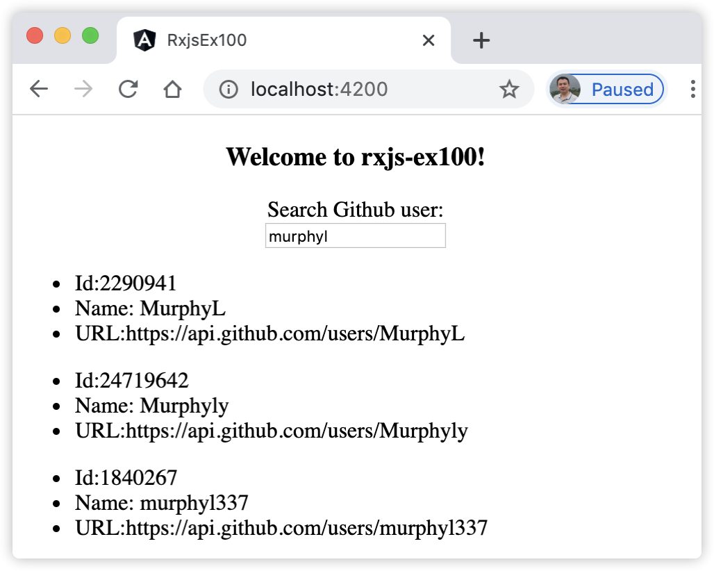
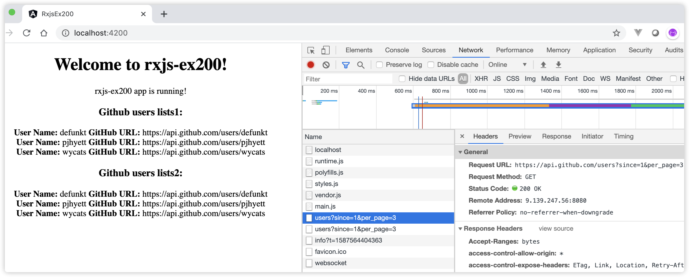

17 学习RxJS在Angular中的实际应用¶
在响应式编程章节，我们介绍了RxJS库，并且介绍了它的一些基本功能。本章，我们继续介绍RxJS的一些高级知识以及在Angular中的实际应用。
17.1 什么是主题（Subject）¶
RxJS库提供了多种用于操控数据流的类，Subject（主题）就是其中之一。理解Subject对象，需要从以下方面进行了解。
17.1.1 理解数据生产者和数据消费者¶
数据生产者发送数据，数据消费者接收数据，在响应式编程里，可观察对象(Observable)负责发送数据，观察者(Observers)负责接收数据。普通的Observable只是数据生产者，发送数据。而Subject 同时继承了 Observable 和 Observer的特性，因此，可以理解它既是Observable，也是Observer。Subjects 作为可观察者对象，它可以被订阅；作为观察者，它有next()，error()和complete()这样的方法，要向 Subject 发送一个新值，只需调用它的next()方法，它就会将值传播到它的订阅方法中。
17.1.2 理解单播和多播¶
使用Subject的主要原因是多播。默认情况下，Observable是单播。单播意味着每个订阅的观察者拥有Observable的独立执行，意思是每次从头开始把值 发给观察者。为了证明这一点，请参阅下面的示例：
let obs$ = new Observable((observer) => { // 定义一个普通的Observable对象 observer.next(Math.random()); }); obs$.subscribe(item => console.log("1st subscriber:" + item));// 订阅者甲 obs$.subscribe(item => console.log("2st subscriber:" + item));// 订阅者乙
执行上面代码后，控制台分别打印出2个不同的值，说明对obs$对象订阅时，每次返回的是独立的执行对象。
我们将上面代码中的普通可观察对象obs$改用Subject类型来实现，请参阅下面的示例：
let subject$ = new Subject(); subject$.subscribe(item => console.log("1st subscriber:" + item));// 订阅者甲 subject$.subscribe(item => console.log("2st subscriber:" + item));// 订阅者乙 subject$.next(Math.random());
上述代码中的最后一行调用Subject类型对象的next()方法，发送数据，这是因为Subject对象同时具有Observer对象的特性。执行上面代码后，控制台分别打印出2个相同的值，说明对subject$对象订阅时，每次返回的是同一个相同的对象。Subject多播的特性用在应用中，可以同时对多个订阅者对象进行广播，它们同一时刻均接收到相同的值。
上面提到，Subject可以是Observer（观察者）类型对象，因此，我们可以将Subject类型的对象作为参数传递给普通的Observable对象的subscribe()方法，请参阅下面的示例：
let obs$ = new Observable((observer) => { observer.next(Math.random()); }); let subject$ = new Subject(); subject$.subscribe(item => console.log("1st subscriber:" + item));// 订阅者甲 subject$.subscribe(item => console.log("2st subscriber:" + item));// 订阅者乙 obs$.subscribe(subject$); // 将subject$变量作为参数传递给obs$对象
上述代码，通过把subject$变量作为参数传递给obs$对象的subscribe()方法，这时obs$（普通的Observable类型对象）单播变成了多播。执行上述代码，控制台打印2行相同的结果值。
17.2 不同类型的主题（Subject）¶
Subject 的作用是实现 Observable 的多播。多播的作用是在多个订阅者之间共享的，所以它可以确保每个订阅者接收到的数据绝对相等。除了上面介绍了Subject可以实现多播，RxJS 还提供了一些 Subject 的变体以应对不同场景，它们分别是：BehaviorSubject、ReplaySubject 以及 AsyncSubject。所有的Subject都是特殊的Observable。
17.2.1 使用BehaviorSubject类型主题¶
Subject的主要变体之一是BehaviorSubject。 BehaviorSubject具有存储“当前”值的特征，我们可以直接从BehaviorSubject获取最后(最近)发出的值。 有两种方法可以获得最后一次发出的值：可以通过访问BehaviorSubject上的value属性来获取值，也可以直接订阅（subscribe）它。无论订阅者订阅的时间是否晚于数据产生的时间，BehaviorSubject都将直接向订阅者发出当前值。请参阅以下示例：
const subject$ = new BehaviorSubject(1); // 在创建BehaviorSubject对象时，需要为它初始化一个默认值。 // 订阅者 A subject$.subscribe((data) => { console.log('Subscriber A:', data); }); subject$.next(Math.random()); subject$.next(Math.random()); // 订阅者 B subject$.subscribe((data) => { console.log('Subscriber B:', data); }); subject$.next(Math.random()); console.log(subject$.value)
执行上述代码，控制台将打印类似如下内容：
Subscriber A: 1 Subscriber A: 0.6231195135064151 Subscriber A: 0.5133829347977827 Subscriber B: 0.5133829347977827 Subscriber A: 0.8149887082595697 Subscriber B: 0.8149887082595697 0.8149887082595697
上述代码中，完成了以下内容：
首先创建一个BehaviorSubject主题，在创建BehaviorSubject对象时，需要为它初始化一个默认值；
订阅者A订阅subject$主题，新订阅者将自动接收最后存储的值并记录此信息，这时控制台将打印初始化的值。然后，调用subject$的next()方法，模拟连续发送2个随机值。代码执行到这里时，控制台将连续执行2次订阅者A的订阅方法，打印2行不同的随机数；
接着订阅者B订阅subject$主题，新订阅者B将自动接收最后存储的值并记录此信息：最后一个随机数值；
BehaviorSubject主题再次发出新值。现在，两个订阅者都将收到值并记录它们；
最后，调用BehaviorSubject主题的value属性即可记录当前的最新值，且获取value值的方式是同步的。
注意，新订阅者将自动接收BehaviorSubject主题最后存储的值，并记录此信息。
17.2.2 使用ReplaySubject类型主题¶
ReplaySubject与BehaviorSubject相比，它不但可以向新订阅者发送最近的值，还能发送旧值。ReplaySubject主题可以记录及存储多个值，并将它们“重放”给新订阅者。
当创建ReplaySubject主题变量时，可以指定存储的数量以及数据的过期时间。如：存储最后5个值，然后将它们发送给订阅者。请参阅以下示例代码：
const subject = new ReplaySubject(2); // 订阅者 A subject.subscribe((data) => { console.log('Subscriber A:', data); }); subject.next(Math.random()) subject.next(Math.random()) subject.next(Math.random()) // 订阅者 B subject.subscribe((data) => { console.log('Subscriber B:', data); }); subject.next(Math.random());
执行上述代码，控制台将打印类似如下内容：
Subscriber A: 0.9869085038777468 Subscriber A: 0.35373571090521394 Subscriber A: 0.46486423218699646 Subscriber B: 0.35373571090521394 Subscriber B: 0.46486423218699646 Subscriber A: 0.548199728993469 Subscriber B: 0.548199728993469
上述代码中，完成了以下内容：
首先创建一个ReplaySubject主题，同时为它初始化一个默认的存储的数量值：2；
订阅者A订阅subject$主题，然后，调用subject$的next()方法，模拟连续发送3个随机值。代码执行到这里时，控制台将连续执行3次订阅者A的订阅方法，打印3行不同的随机数；
接着订阅者B订阅subject$主题，新订阅者B将自动接收最后存储的值并记录此信息，控制台将连续打印最后的两个随机数值；
最后，ReplaySubject主题再次发出新值。现在，两个订阅者都将收到值并记录它们；
注意，ReplaySubject主题不同于BehaviorSubject主题，初始化时，不需要指定默认值，因此当订阅者A第一次订阅它时，并不执行订阅方法中的代码。
如前所述，也可以指定在ReplaySubject主题中存储值的时间，如：
const subject = new ReplaySubject(2,1000);
上述代码表示，初始化一个BehaviorSubject主题，默认存储2个数值，且时间不超过1秒。
17.2.3 使用AsyncSubject类型主题¶
虽然 BehaviorSubject 和 ReplaySubject 都存储值，但 AsyncSubject 的工作方式略有不同。AsyncSubject的特点是：当执行多次AsyncSubject主题的next()方法时，只有执行最后一次时，并且在执行 complete()方法时才会发送值给它的订阅者。 请参阅下面的示例代码：
const subject = new AsyncSubject(); // 订阅者 A subject.subscribe((data) => { console.log('Subscriber A:', data); }); subject.next(Math.random()) subject.next(Math.random()) subject.next(Math.random()) // 订阅者 B subject.subscribe((data) => { console.log('Subscriber B:', data); }); subject.next(Math.random()); subject.complete();
执行上述代码，控制台将打印类似如下内容：
Subscriber A: 0.028503049750259413 Subscriber B: 0.028503049750259413
上述代码中，完成了以下内容：
首先创建一个AsyncSubject主题；
订阅者A订阅subject$主题。然后，调用subject$的next()方法，模拟连续发送3个随机值；
接着订阅者B订阅subject$主题。然后，调用subject$的next()方法，再次模拟发送1个随机值；
最后，调用AsyncSubject主题的complete()方法。现在，两个订阅者都将收到最新的值并记录它们，控制台分别执行2个订阅者订阅的方法，打印2行相同的值。
注意，AsyncSubject主题初始化时，也不需要指定默认值，并且在执行complete()方法之前，不执行所有的订阅者订阅的方法。
下面我们看一个在实际应用中的示例，使用Subject主题的演示搜索Github的用户信息。
17.3 [示例 rxjs-ex100] 演示Angular请求防抖示例¶
用Angular CLI构建应用程序，具体命令如下：
ng new rxjs-ex100 --minimal --interactive=false
启动服务，具体命令如下：
ng serve
查看应用程序结果。打开Web浏览器并浏览到 “http://localhost:4200”，应该看到文本 “Welcome to rxjs-ex100!”。
新建接口。使用命令
ng g interface user新建接口，并将文件src/app/user.ts更改为以下内容：
export interface User { items: { id: string; login: string; url: string; } } export interface SearchResult { total_count: number, incomplete_results: boolean, items: Array<User> }
编辑模块。编辑文件src/app/app.module.ts，并将其更改为以下内容：
import { BrowserModule } from '@angular/platform-browser'; import { NgModule } from '@angular/core'; import { HttpClientModule } from '@angular/common/http'; import { AppComponent } from './app.component'; @NgModule({ declarations: [ AppComponent ], imports: [ BrowserModule, HttpClientModule ], providers: [], bootstrap: [AppComponent] }) export class AppModule { }
新建服务。使用命令
ng g s search新建服务，并将文件src/app/search.service.ts更改为以下内容：
import { Injectable } from '@angular/core'; import { HttpClient } from '@angular/common/http'; import { Observable, of } from 'rxjs'; import { catchError, map, tap } from 'rxjs/operators'; import { SearchResult } from './user'; @Injectable({ providedIn: 'root' }) export class SearchService { constructor(private http: HttpClient) { } searchUser(val: string) { return this.http.get<Observable<SearchResult>>("https://api.github.com/search/users?q=" + val) .pipe( tap(console.log), // 打印日志 map(response => response), catchError((error) => { console.log("something went wrong, " + error); return of([]); }) ) } }
编辑组件。编辑文件src/app/app.component.ts，并将其更改为以下内容：
import { Component, OnInit } from '@angular/core'; import { Subject, Observable } from 'rxjs'; import { User, SearchResult } from './user'; import { SearchService } from './search.service'; import { debounceTime, distinctUntilChanged, switchMap } from 'rxjs/operators'; @Component({ selector: 'app-root', template: ` <div style="text-align:center"> <h3> Welcome to {{title}}! </h3> <div>Search Github user:</div> <input type="text" (keyup)="onChange($event.target.value)" /> <ul *ngFor="let user of users" style="text-align:left"> <li> Id:{{user.id}}</li> <li> Name: {{user.login}}</li> <li> URL:{{user.url}} </li> </ul> <div *ngIf="!users.length"> <label style="color:red">no search result!</label> </div> </div> `, styles: [] }) export class AppComponent implements OnInit { title = 'rxjs-ex100'; onSearchUser$ = new Subject<string>(); users: Array<User> = []; constructor(private searchService: SearchService) { } ngOnInit() { let validSearch$: Observable<any> = this.validSearch(); validSearch$.subscribe(resp => { if (resp && resp.items && resp.items.length) { let result = resp as SearchResult; this.users = result.items; } else { this.users = []; } }) } public onChange(searchText: string) { this.onSearchUser$.next(searchText); // 向主题发送数据 } private validSearch(): Observable<any> { return this.onSearchUser$.pipe( debounceTime(500), // 等待0.5秒 distinctUntilChanged(), // 等待搜索内容发生变化 switchMap(userName => // 请求发送给服务 this.searchService.searchUser(userName)) ); } }
观察应用程序页面，在输入框中输入字符串“murphyl”，页面显示效果如图17-1所示。
图17-1 演示搜索Github用户信息
{kind=link}
在上面的示例rxjs-ex100中，完成了以下内容：
新建一个User接口，接口中字段参照地址“https://api.github.com/search/users?q=abc”返回的数据进行定义；
编辑模块类，添加HttpClientModule库；
新建服务类，访问Github接口，返回Observable<SearchResult>类型结果；
在组件类中，定义了Subject<string>类型的onSearchUser$主题变量，在页面初始化时，订阅该主题；页面初始化完成后，用户在页面输入文本时，通过绑定事件方法，向主题发送数据；在订阅主题的过程中，我们使用了3个Rxjs操作符，这也是本示例的核心所在，这3个操作符的作用介绍如下：
debounceTime操作符隶属于过滤型操作符，它的作用是过滤掉指定时间内产生的数据。在本示例中，过滤掉用户在连续敲击键盘时间小于0.5秒内的数据。换句话说，就是在用户输入字符时，等待0.5秒，才发出当前输入框的值。如果用户输入很快，那么就一直忽略，直到停顿时间大于0.5秒，才发出当前输入框的值；
distinctUntilChanged操作符的作用是比较当前值与上一个发出的值不同时，才发出当前输入框的值。在上面的额示例中，假设用户输入速度很快，0.5秒内连续输入了2次相同的文本，distinctUntilChanged操作符能保证让系统仅请求一次HTTP服务，自动过滤掉最后一次相同的请求服务；
switchMap操作符的作用是切换新的请求，即终止之前未完成的请求，开始使用新的请求。这在本示例中，当用户先输入的文本和后输入的文本不一致时，期望以后输入的文本为准，这时switchMap操作符就能满足此要求，立即终止之前的请求，无论它是否完成，立即开始新的请求。关于switchMap操作符已经在本书前面章节有详细的介绍，读者可以自行翻阅查看。
在模板中，使用*ngFor指令遍历users，通过模板表达式分别输出user的属性id、login和url的值。同时，判断users数组的长度来显示结果是否存在。
17.4 什么时候需要取消订阅¶
使用RxJS时，订阅的时候，时刻都不忘调用unsubscribe()以防内存泄漏。对于结束Observable，释放内存的方式有三种方式：
Observable完成值的发送，执行Observable.onComplete()方法；
Observable发生错误，执行Observable.OnError()方法；
订阅者主动取消订阅，执行subscription.unsubscribe()方法。
对于Observable.onComplete()和Observable.OnError()，RxJS自身会处理这两种情况，所以不需要在代码里再手动取消订阅释放内存。对于第三种方式，如果Observable还在源源不断的发送值，订阅者想主动取消订阅，那就需要在代码里调用unsubscribe()取消订阅释放内存。
在Angular项目中，常用到的订阅以及是否需要调用unsubscribe()方法来取消订阅，主要有以下几种场景：
Angular中通过HttpClient执行Http请求API后返回的Observable对象，订阅这些Observable对象拿到返回的数据时，不需要调用unsubscribe()方法取消订阅。
使用Angular AsyncPipe异步管道操作符时，不需要调用unsubscribe()取消订阅。
RxJS自带的一些操作符：take，takeWhile，first等操作符，不需要调用unsubscribe()取消订阅。
通过Subject，BehaviorSubject，AsyncSubject和ReplaySubject在各个Component之间通信，需要调用unsubscribe()方法取消订阅。
在Angular组件销毁时的生命周期接口OnDestroy中有个钩子函数：ngOnDestroy，在组件被销毁之前执行，所以一般都是把Subscription对象的unsubscribe()方法放在这个函数里执行，代码如下：
ngOnDestroy() { this.subscription.unsubscribe(); }
17.5 通过RxJS实现缓存¶
本书在前面章节简单的介绍了RxJS的可观察对象的冷热模式，Angular中通过HttpClient执行Http请求，HttpClient中的所有 API 都是基于 Observable 的，也就是说像 get、post、put或delete等方法返回的都是Observable。因为Observable天生是惰性的，所以只有当我们调用subscribe时才会真正发起请求。但是，对同一个Observable调用多次subscribe会导致源Observable一遍又一遍地重新创建，即在每个订阅 (subscription) 上执行一个请求。这种现象对应的是RxJS的可观察对象的冷模式。
下面我们看一个示例，页面上打印Github中User列表的信息，通过这个示例，我们将演示如何通过RxJS实现缓存数据功能。
17.5.1 [示例 rxjs-ex200] 了解HttpClient执行Http请求的性能问题¶
用Angular CLI构建应用程序，具体命令如下：
ng new rxjs-ex200 --minimal --interactive=false
启动服务，具体命令如下：
ng serve
查看应用程序结果。打开Web浏览器并浏览到 “http://localhost:4200”，应该看到文本 “Welcome to rxjs-ex200!”。
编辑模块。编辑文件src/app/app.module.ts，并将其更改为以下内容：
import { BrowserModule } from '@angular/platform-browser'; import { NgModule } from '@angular/core'; import { HttpClientModule } from '@angular/common/http'; import { AppComponent } from './app.component'; @NgModule({ declarations: [ AppComponent ], imports: [ BrowserModule, HttpClientModule ], providers: [], bootstrap: [AppComponent] }) export class AppModule { }
新建接口。使用命令
ng g interface user新建接口，并将文件src/app/user.ts更改为以下内容：
export interface User { id: string; login: string; url: string; }
新建服务。使用命令
ng g s user新建UserService服务类，并将文件src/app/user.service.ts更改为以下内容：
import { Injectable } from '@angular/core'; import { HttpClient } from '@angular/common/http'; import { Observable } from 'rxjs'; import { User } from './user'; @Injectable({ providedIn: 'root' }) export class UserService { private usersUrl = 'https://api.github.com/users?since=1&per_page=3'; //演示用，仅返回3条记录 constructor(private http: HttpClient) { } getUsers(): Observable<User[]> { return this.http.get<User[]>(this.usersUrl); } }
编辑组件。编辑文件src/app/app.component.ts，并将其更改为以下内容：
import { Component, OnInit } from '@angular/core'; import { Observable } from 'rxjs'; import { User } from './user'; import { UserService } from './user.service'; @Component({ selector: 'app-root', template: ` <div style="text-align:center"> <h1> Welcome to {{title}}! </h1> <span style="display: block">{{ title }} app is running!</span> <h3>Github users lists1:</h3> <div *ngFor="let user of users$ |async"> <strong>User Name:</strong> {{ user.login }} <strong>GitHub URL:</strong> {{ user.url }} </div> <h3>Github users lists2:</h3> <div *ngFor="let user of users$ |async"> <strong>User Name:</strong> {{ user.login }} <strong>GitHub URL:</strong> {{ user.url }} </div> </div> `, styles: [] }) export class AppComponent implements OnInit { title = 'rxjs-ex200'; users$: Observable<Array<User>>; constructor(private userService: UserService) { } ngOnInit() { this.users$ = this.userService.getUsers(); } }
观察应用程序页面，进入页面开发者模式，观察控制台打印信息，显示效果如图17-2所示。
图17-2 页面上打印Github中User列表的信息
{kind=link}
在上面的示例rxjs-ex200中，完成了以下内容：
新建了UserService服务类，该服务类通过构造函数注入HttpClient服务实例，然后在getUsers()方法调用该实例的GET方法请求Github中用户列表信息；
AppComponent类中通过构造函数注入UserService服务实例，然后在ngOnInit()方法调用该实例的getUsers()方法获取Github中用户列表信息；
在模板页面上通过async管道符订阅users$的数据流信息，一共订阅了2次；
如图17-2所示，当前页面会调用两次GET请求（https://api.github.com/users?since=1&per_page=3），并且两个用户列表列出的3位用户信息一模一样。
示例rxjs-ex200中两个userlist订阅users$，生成了两个Observable实例，并且都是订阅开始之后才开始发送值，也就是说Angular中通过HttpClient执行Http请求返回的Observabl是Cold Observable（冷模式）。
每次调用API，都会生成一个新的Observable实例，有订阅之后才开始发送值，这也符合现在前端开发要求。但是实际开发过程中，有时候后端会有提供一些静态数据的API，不同页面都需要用这些静态数据，按现在的调用API的方式，会导致静态数据API在不同的页面重复多次被调用，这种方式显然性能不好。
17.6 小结¶
本章介绍了使用RxJS实现响应式编程的应用知识，带领读者从认识主题的基本概念开始，分别演示了4种类型的主题，通过Angular请求防抖示例演示主题的使用场景，然后介绍了Angular中什么时候需要取消订阅，最后通过示例演示了通过RxJS实现缓存的效果。